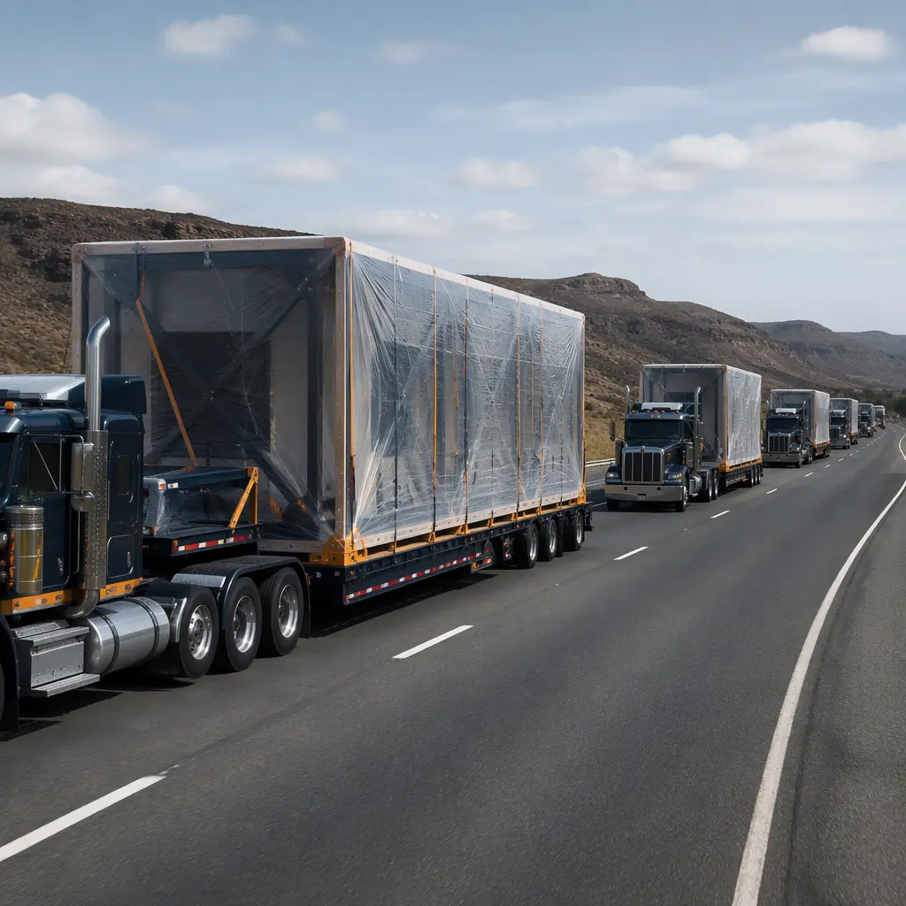
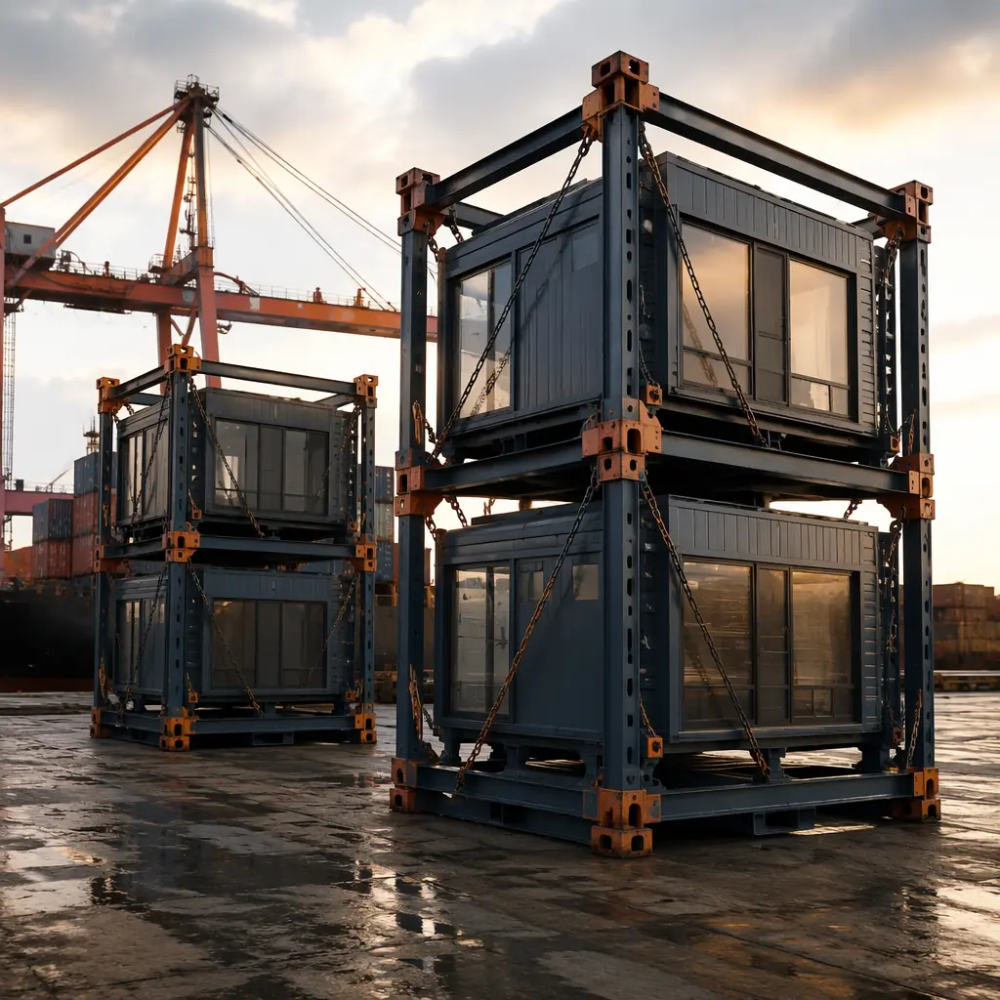
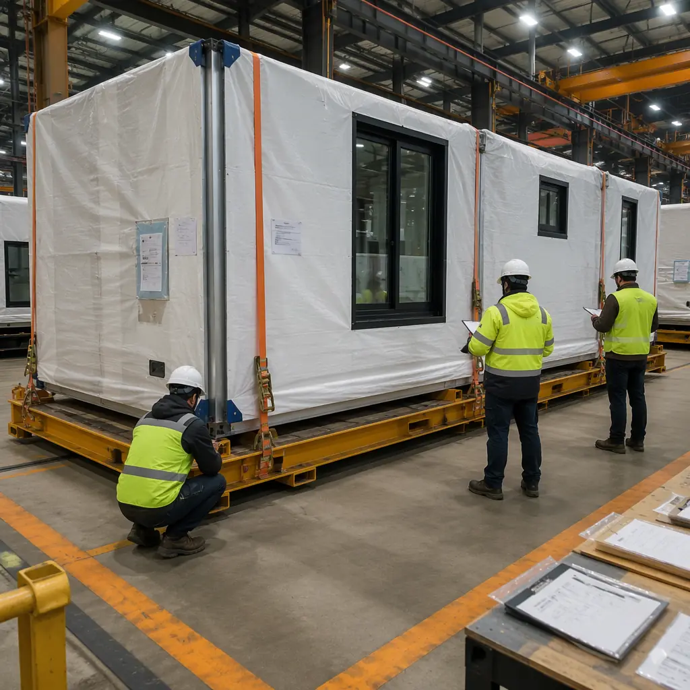
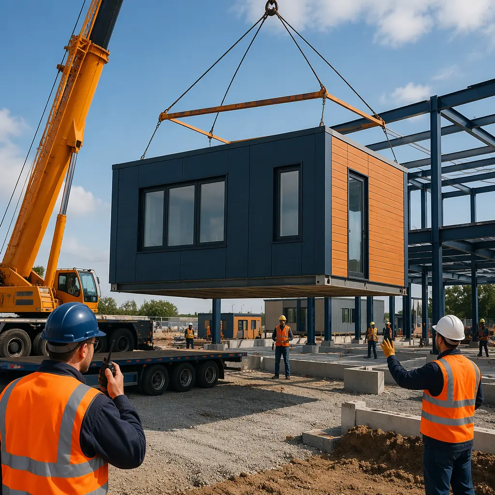

Building a hotel in the Caribbean, an apartment complex in the UK, or a workforce camp in the Middle East with modules manufactured in Asia is no longer unusual — it's the business model for dozens of successful modular developers. But the logistics chain that moves a 40-foot, 15-ton steel module from a factory in Shenzhen to a construction site in Manchester or Miami is a discipline unto itself. Ocean freight, customs harmonization, oversized-load road permits, port handling, and just-in-time craning coordination all have to mesh precisely. MODURA has delivered modules to 18 countries with a 98% on-time delivery record. Here is how the logistics work — and what developers need to know to plan their import timeline.

The End-to-End Module Journey: Factory to Foundation
A module's journey from factory to site involves six distinct legs, each with its own cost drivers and schedule risks:
- Factory load-out (1–2 days per module batch). Modules exit the production line onto flatbed trailers inside the factory yard. Each module is wrapped in a multi-layer weatherproof membrane (reinforced polyethylene with UV inhibitors) and secured with ratchet strapping to engineered tie-down points on the transport frame.
- Port drayage (1–3 days). Overweight/oversized-load permits govern this leg. A standard 12 m × 3.5 m module on a lowboy trailer is within legal limits on Chinese highways, but larger modules (up to 15 m × 4.2 m) require escort vehicles and route surveys. Drayage cost: $400–900 per module for Shenzhen-to-Yantian or Shenzhen-to-Shekou port routes.
- Port handling and vessel loading (2–4 days). Modules are classified as breakbulk or flat-rack container cargo, not standard 40-foot containers. MODURA uses dedicated modular shipping cradles (stackable steel frames that support the module at its engineered lift points) to allow 2–3 modules to be stacked in a single vessel slot, reducing per-module ocean freight cost by 40–55% compared to single-module flat-rack shipment.
- Ocean transit (14–35 days depending on route). Shenzhen to Los Angeles/Long Beach: 14–18 days. Shenzhen to Rotterdam: 28–32 days. Shenzhen to Jebel Ali (Dubai): 16–20 days. Shenzhen to Sydney: 14–18 days. Modules are secured with lashing chains to deck fittings, and acceleration forces during transit are engineered into the module structural frame (typically 0.4g lateral, 0.3g vertical — well within the module's seismic design capacity).
- Destination port discharge and customs clearance (3–7 days). This is where most international modular projects encounter their first delay. Modules are not standard cargo, and customs authorities in every country classify them differently. MODURA pre-files customs documentation before vessel departure and maintains standing compliance dossiers for all 18 destination countries.
- Final-mile road transport (1–5 days). The most permit-intensive leg. Oversized-load regulations vary dramatically by country, state, and even municipality. MODURA's logistics team handles all permitting — the developer's only responsibility is ensuring site access roads can accommodate a 14 m turning radius for the transport trailer.

Customs Classification: The HS Code Problem
Conventional construction materials have straightforward Harmonized System (HS) codes: steel beams fall under 7308, windows under 7610, drywall under 6809. A factory-completed building module containing all of these materials plus MEP systems, finishes, and fixtures does not fit neatly into any single HS code. Different destination countries classify modules differently:
| Destination | Classification | Typical Duty Rate |
|---|---|---|
| United States | HTS 9406.00 — Prefabricated buildings | 2.9% |
| European Union | CN 9406 — Prefabricated buildings | 2.7% |
| United Kingdom | UKGT 9406 — Prefabricated buildings | 0% (developing country preference) |
| Australia | Schedule 3 Section 16 — Prefab buildings | 5% |
| UAE / GCC | Harmonized Code 9406 | 5% |
| Saudi Arabia | SASO 9406 + Certificate of Conformity | 5% + 15% VAT |
The critical insight for developers: import duties on prefabricated buildings are consistently lower than the aggregate duties on individual construction materials. A completed module classified under HS 9406 pays a single 2.9% duty entering the US, whereas importing steel, aluminum windows, gypsum board, ceramic tile, and electrical fixtures as separate line items would attract duties ranging from 0% to 25% depending on the material and country of origin. This tariff efficiency is an underappreciated financial advantage of modular construction, worth $30,000–$80,000 in duty savings for a typical 100-module project. For a complete breakdown of modular construction costs including logistics, see our 2026 cost per square foot pricing guide.

Module Protection During Ocean Transit
A module spending 30 days on a container ship crossing the Pacific or Indian Ocean faces salt spray, condensation cycling, and mechanical vibration. MODURA's protection protocol has been refined over 500+ international shipments:
Multi-layer wrapping system. The primary barrier is a reinforced cross-laminated polyethylene membrane (200-micron thickness, UV-stabilized for up to 90 days of sun exposure). Underneath, all finished surfaces receive a peelable protective film. Inside the module, silica-gel desiccant packs (calculated at 500g per 100 cubic feet of interior volume) control condensation during temperature cycling. Vents with Gore-Tex membranes allow pressure equalization without moisture ingress.
Transport frame integration. The steel shipping cradle doubles as a lifting frame during craning and a foundation interface on-site. The cradle is designed to the module's exact weight distribution (tolerance ±50 kg at each corner) and includes stacking cones for multi-module vessel stowage. For projects in particularly corrosive environments, see our guide to coastal and flood-resistant modular design for material specifications.
Final-Mile Permitting: Country-by-Country Reality
The most variable cost in international modular logistics is the final road transport leg. A module that clears customs in three days can sit at port for two weeks waiting for an oversized-load permit. Key country-specific considerations:
- United States. Oversized-load permits are issued state-by-state. A module traveling from Port of Long Beach to a site in Nevada requires California and Nevada permits, plus county-level approvals if the route leaves the interstate highway system. Permit lead time: 2–4 weeks. Escort vehicle requirements: one pilot car for loads over 12 ft wide, two pilot cars (front and rear) for loads over 14 ft wide.
- European Union. Cross-border transport permits under the European Conference of Ministers of Transport (ECMT) multilateral quota system allow a single permit for multi-country routes. However, individual member states can impose additional restrictions. Germany requires nighttime transport (22:00–06:00) for loads over 3.5 m wide on Autobahns. France restricts weekend transport of oversized loads on national routes.
- Middle East. GCC countries have harmonized vehicle dimension regulations, but Saudi Arabia requires a SASO Certificate of Conformity for each module before road transport clearance is issued. UAE roads can accommodate modules up to 4.2 m wide without escort on designated heavy-haul corridors (E11, E311, E611).
- Australia. National Heavy Vehicle Regulator (NHVR) permits cover interstate routes, but bridge load ratings on rural roads frequently restrict module transport. Route surveys are mandatory for any road not classified as a B-double route.
For developers planning international modular projects, understanding the logistical cost profile before committing to a construction method is essential. Our ROI developer's guide and turnkey construction guide walk through the full project economics including logistics.

Schedule Buffer: How to Plan for Logistics Risk
MODURA builds a 10–15% logistics buffer into every project schedule, allocated across the six transport legs based on historical delay patterns. Ocean transit variability (port congestion, weather routing, canal transit delays) accounts for approximately 60% of logistics delays across 500+ projects. Customs clearance variability accounts for another 25%. The remaining 15% is final-mile permit delays.
The single most effective risk mitigation is early customs engagement. MODURA submits a binding tariff classification ruling request to the destination country's customs authority at least 90 days before the first module ships. This pre-clearance ensures that every module in the shipment is classified under the same HS code with a confirmed duty rate, eliminating the most common cause of customs delays: reclassification at the port of entry. For projects requiring regulatory compliance documentation across multiple jurisdictions, see our permitting and zoning guide for modular projects and partner evaluation and selection framework.
Why International Modular Logistics Favors Established Manufacturers
The logistics chain for international modular construction has high fixed costs: customs broker relationships, standing permits, shipping cradle inventory, and trained craning crews. A manufacturer doing one international project per year absorbs these costs on that single project. A manufacturer like MODURA, with 500+ projects across 18 countries, amortizes the logistics infrastructure across a continuous project pipeline. The result is per-module logistics costs that are 30–50% lower than what a first-time international modular developer would pay. This is not a marketing claim — it's the operational reality of high-volume international shipping, the same dynamic that makes Walmart's container freight costs a fraction of a small importer's.